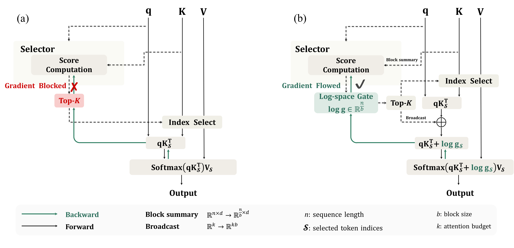
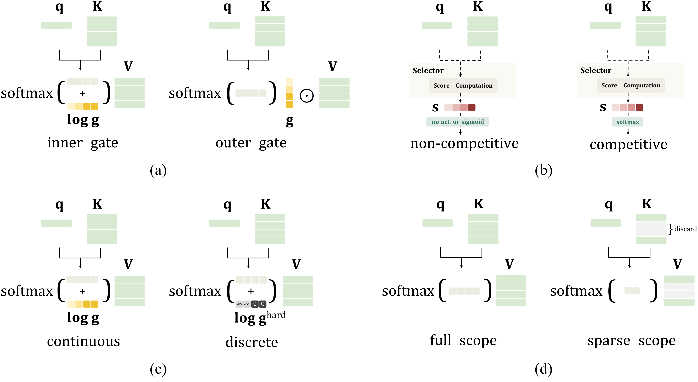
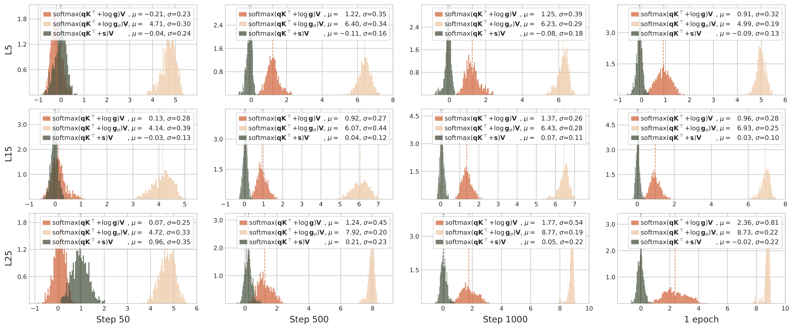
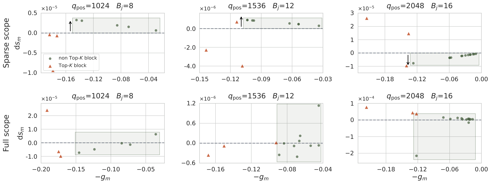
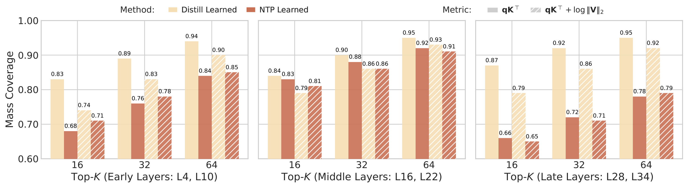
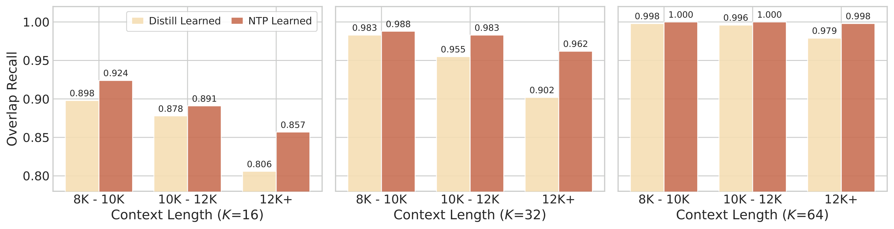
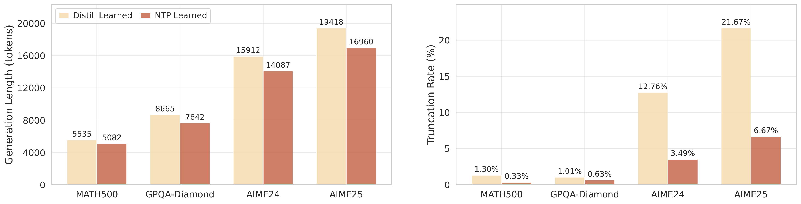
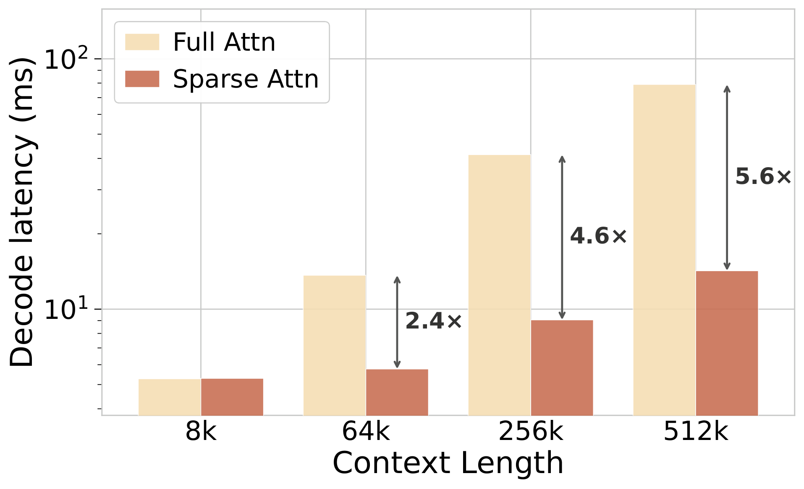
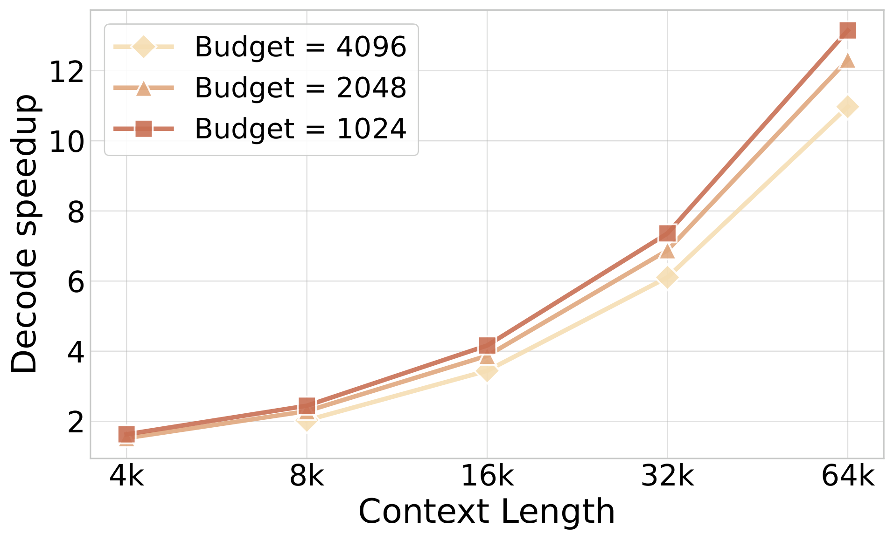
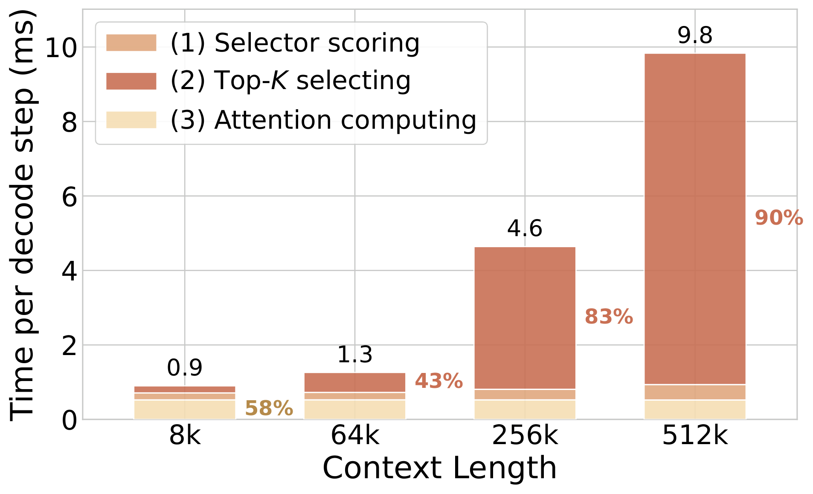

解码期的注意力开销随上下文线性增长，累计成本却是平方级。SAS的做法很直接：推理时照旧用硬Top-K选块，训练时给被选中的块加一个连续门控，让语言建模损失把梯度直接送到选择器，不再需要蒸馏稠密注意力。
长上下文推理的主要瓶颈在解码：自回归生成每产生一个新token，都要对全部历史token做一次稠密注意力，累计注意力开销随上下文长度以平方级增长。已经部署的高性能LLM大多仍是稠密注意力，所以实践更偏向不改架构、不重训的推理期提效手段，这也是训练后注意力稀疏化的出发点。这里的「训练后」是相对稠密预训练而言，包含中期适配、后训练微调，以及训练无关的推理期稀疏化。
中心问题是：在有限的注意力预算下，怎么为每个query挑出最有用的上下文单元，单元可以是单个token，也可以是更粗粒度的块。训练无关的方法用启发式或经验规则解决这个问题，实现简单，但手工写死的选择规则无法根据模型自身的预测行为调整策略。可训练的稀疏化引入了轻量选择器：选择器为每个query给上下文单元打分，再由硬Top-K选出实际被注意的单元，性能上限高于手工规则。但硬Top-K不可导，这类方法通常用逐层蒸馏稠密注意力分布来训练选择器，让每层选择器去匹配原稠密模型产生的注意力质量。
这种替代监督会带来排序错位：它教选择器按原稠密模型「注意力放在哪里」去排序，而不是按这些单元在固定注意力预算下对最终预测的影响去排序。具体有两个局限。第一，逐层目标会忽略上下文使用上的跨层互补。第二，注意力匹配只约束注意力权重，忽略了被注意的value矩阵如何影响最终预测。

这篇工作的思路是用语言建模损失对上下文选择做端到端优化：让选择器的分数在训练时成为可微注意力计算的一部分，标准语言建模损失就能通过反向传播直接更新选择器。作者在SeerAttention-R的开源块稀疏设定上实例化这个想法，选择器为每个query给上下文块打分，训练时这些块分数被当作log空间的软门控加到注意力logits上。这样就把训练后稀疏化简化成两件事：把注意力内核换成带门控的版本，以及优化标准的语言建模损失，不再需要教师注意力蒸馏。
这个设计能否奏效，取决于四个关键选择：
● 门控位置：门控要加在注意力softmax内部且用log形式，让选择器分数直接调节注意力质量分配，而不只是对注意力输出做缩放。
● 门控激活：门控要在上下文块之间做归一化，比如用softmax，让门控编码校准后的相对重要性，而不是未归一化的分数。
● 排序信息保留：被选中的门控要保持连续，不能塌缩成二值Top-K指示，模型需要学的既包括哪些块被选中，也包括它们之间的相对优先级。
● 训练范围：训练只更新被选中的块而不是全部上下文块，这样做便宜得多，最终性能也相当。
前三条让语言建模损失的端到端梯度携带有效信息，告诉模型哪些上下文块真正支撑了它的预测，最后一条则控制训练成本。除了这四个设计选择，作者还写了专门的Triton内核让长上下文训练可行：朴素实现要先物化完整的注意力矩阵再加log空间门控，长上下文训练的内存开销不可接受，内核改为把门控融合进tile级的qKᵀ 计算。
实验结果显示，SAS在推理、长文本理解和智能体任务上一致优于已有的训练后稀疏化基线，低注意力预算下提升最大。在1024 token预算下，Qwen3-4B、8B、14B三个规模上MATH500比SeerAttention-R高6.0到7.7分，GPQA-Diamond高10.6到15.5分。长文本理解上SAS在每个预算都领先，长输入的差距最大；智能体任务上BFCL最高提升3.5分，VitaBench在4096预算下接近全注意力。
三点贡献：
● 端到端稀疏化范式：用语言建模损失训练上下文选择器，去掉教师注意力与辅助蒸馏。在主干、选择器结构、训练数据都对齐的受控对比里，它学到的稀疏路由比逐层注意力蒸馏更有效。
● 设计选择：指出让门控松弛既有效又能落地的那几项选择，包括log空间门控注入、归一化门控激活、保留细粒度分数差异、高效的稀疏训练范围，以及面向长上下文的内存高效内核。
● 一致收益：在推理（MATH500、GPQA-Diamond、AIME24、AIME25）、长文本理解（LongBench）和智能体任务（BFCL、VitaBench）上一致提升，低注意力预算下提升超过10%。
自回归语言模型的注意力计算是这样定义的：设q为当前token的query向量，K和V为前n个token的key与value矩阵，这些token称为上下文token。标准注意力输出o = softmax(qKᵀ)V，这里略去缩放因子。自回归解码时每个新query都要注意全部历史key和value，而历史token数随解码步数线性增长，因此长度为n的序列上累计注意力开销是O(n²)。
块稀疏注意力通过把query限制到一部分上下文块上来降低这个平方开销。设S为被选中的token索引集合，注意力输出为o = softmax(qKₛᵀ)Vₛ，其中Kₛ 和Vₛ 只包含S内的token。对单个query，计算量从O(n) 降到O(|S|)，整条长度为n的序列上累计开销降到O(n|S|)。构造S的方式是：把n个上下文位置划分成C个连续索引块B₁ 到B_C，每块含b个token，即C = n/b；轻量选择器R计算这些块的相关性分数，选出分数最高的K个块，query只注意这些被选中块的并集。
在纯硬Top-K下，被选中的索引集合对选择器分数是分段常数函数，语言建模损失无法通过选择路径给选择器任何有效梯度。要让选择器端到端可训练，核心问题就是让选择器分数以可微的方式影响注意力，从而让语言建模损失能够训练选择器。
SAS训练一个轻量选择器，用语言建模损失给上下文块排序，整个过程分三步展开：先把稀疏块选择重新表述为上下文排序；再分析门控位置、门控激活、排序信息保留、训练范围这四个要素如何影响排序能否被有效学出来；最后给出支撑长上下文训练的专用内核。

起点是Top-K选择由选择器分数在上下文块上的排序决定。选择器在给出离散集合之前，先定义了候选块的排序，而好的选择器应该把更有用的块排得更靠前。因此这篇工作把注意力稀疏化看作上下文排序问题：训练时选择器学一个覆盖所有块的连续排序，这个排序再决定稀疏块选择。
要让块排序可学，选择器分数必须在训练时影响注意力计算。沿用前面的块划分，把始终保留的当前块单独记为B₀，其余C个上下文块作为待排序的历史块。选择器只为历史块产生分数s，并把它转成正的门控g = φ(s)，同时令g₀ = 1让当前块不受偏置影响。每个历史块的门控广播到该块内的所有token，当前块内的token保持单位门控；注意力计算依赖这些广播门控之后，语言建模损失的梯度就能回传到门控g，再回传到选择器。
仅仅让梯度到达选择器，并不足以保证学到有效的块排序，不同门控形式塑造出的排序信号差别很大。作者考察四个设计要素：
● 门控位置：门控是放进softmax内部，即o = softmax(qKᵀ + log g)V，还是作用在softmax外部，即o = softmax(qKᵀ)(g ⊙ V)。放在内部时用log形式，门控在softmax之后等价于对注意力概率做乘性加权。
● 门控激活：块分数注入注意力之前如何变换。对比归一化门控g = softmax(s)、独立门控sigmoid(s)，以及把s直接加到注意力logits上的未归一化注入；所有变体里当前块都保持g₀ = 1不受偏置。
● 排序信息保留：训练用软门控g = φ(s)，还是用STE支持的硬Top-K门控，即 ĝ = stopgrad(g_hard − g) + g，其中g_hard只标记块是否进入Top-K。
● 训练范围：训练用全范围注意力、稀疏范围注意力，还是通过在分数上加噪来随机逼近全范围。
受控实验沿用SeerAttention-R的AttnGate选择器，块大小64、Top-K取32，在Qwen3-4B上用OpenR1-Math-220k的93.7K条样本训练，训练与生成长度都是32768，主干LLM在训练中冻结。评估用GPQA-Diamond，推理统一按块稀疏形式进行，报告16次运行的准确率均值与平均生成长度。
下表是四个设计维度的消融结果。数值为avg@16准确率（%），括号内是平均生成长度，标准差在2.0到2.8之间故从略；✓ 表示保留排序信息，✗ 表示塌缩为二值掩码；full* 表示在Top-K之前加噪来模拟全范围训练。
整体观察有四点。内层softmax门控优于外层门控，说明门控应该参与注意力归一化，而不只是缩放value矩阵的贡献。归一化门控很重要，softmax一致优于独立sigmoid门控和未归一化的原始logits注入，因为它把历史上下文相对单位门控的当前块做了校准。保留排序信息的软门控让训练更稳定，同时最终性能更好。与前三点不同，训练范围主要影响效率，稀疏范围起步更慢，但逐步逼近全范围，最终达到相当的性能。
| 设置 | 门控位置 | 门控激活 | 排序保留 | 训练范围 | 10步 | 100步 | 1000步 | 1 epoch |
|---|---|---|---|---|---|---|---|---|
| (1) softmax(qKᵀ)V | / | / | / | / | / | / | / | 56.1（8547） |
| (2) softmax(qKᵀ + log g)V | 内部 | softmax | ✓ | full | 30.8（25277） | 52.2（8696） | 53.7（6977） | 54.4（7109） |
| (3) softmax(qKᵀ)(g ⊙ V) | 外部 | softmax | ✓ | full | 28.3（25594） | 38.9（16969） | 43.2（12801） | 41.6（13807） |
| (4) softmax(qKᵀ + log g)V | 内部 | softmax | ✓ | full | 30.8（25277） | 52.2（8696） | 53.7（6977） | 54.4（7109） |
| (5) softmax(qKᵀ + log gσ)V | 内部 | sigmoid | ✓ | full | 19.6（27717） | 20.4（27997） | 17.6（27989） | 17.0（28444） |
| (6) softmax(qKᵀ + s)V | 内部 | / | ✓ | full | 23.4（27540） | 19.9（27418） | 18.9（26703） | 18.8（26401） |
| (7) softmax(qKᵀ + log g)V | 内部 | softmax | ✓ | full | 30.8（25277） | 52.2（8696） | 53.7（6977） | 54.4（7109） |
| (8) softmax(qKᵀ + log ĝ)V | 内部 | softmax | ✗ | full | 46.5（9821） | 42.4（8438） | 49.6（7135） | 46.0（7289） |
| (9) softmax(qKᵀ + log g)V | 内部 | softmax | ✓ | full | 30.8（25277） | 52.2（8696） | 53.7（6977） | 54.4（7109） |
| (10) softmax(qKₛᵀ + log gₛ)Vₛ | 内部 | softmax | ✓ | sparse | 24.8（27504） | 51.0（8087） | 53.6（7401） | 54.8（7410） |
| (11) softmax(qKₛᵀ + log gₛ)Vₛ | 内部 | softmax | ✓ | full* | 26.3（27350） | 51.2（7732） | 52.6（7424） | 52.2（7552） |
门控位置的关键区别在于门控是否参与注意力的归一化。在softmax外部时，注意力概率已经确定，门控只能缩放每个块的value贡献；作为log空间偏置放进softmax内部时，门控直接改变注意力质量在块之间的分配。设p_i为无门控时的注意力概率，p̃_i为内层门控后的概率，两者的差别体现在门控梯度上：内层门控的梯度对块内token求和后形如 (p̃_i / g_m) 乘dOᵀ(v_i − o)，外层门控则是p_i乘dOᵀv_i。外层门控用的是固定的注意力概率，内层门控通过v_i − o提供把注意力质量在块之间重新分配的相对信号，这也是门控能学到块间相对重要性的原因。
激活函数决定选择器如何把历史上下文相对始终保留的当前块做校准。历史块取g = softmax(s) 时，log g_m = s_m − LSE(s)，当前块g₀ = 1对应零加性偏置。虽然 −LSE(s) 被所有历史块共享，但它没有作用到当前块，因此在后续的注意力softmax中不会抵消，它校准的是分配给历史上下文的总体注意力质量相对当前块的比例。归一化还让门控对全局平移s到s + c保持不变；直接注入未归一化的s时，同样的平移会改变历史块与当前块之间的注意力配比。

排序信息保留的关键区别在于前向过程保留连续排序，还是把它塌缩成二值Top-K掩码。设z_i为token i的注意力logit，b(i) 是它所属的块。软门控下所有块共用一个对全部token求和的归一化项，每个注意力权重始终有界；硬门控依靠STE实现可微反向，它的前向归一化只对选中集合S求和，被丢弃的块则由它在这套受限归一化下的注意力质量来排序，而它自己的token并不在其中。结果是软权重g乘e的z_i次方，再除以对全部token的同类求和，始终不超过1；硬权重则没有上界，一旦被丢弃的块分数超过选中集合就指数增长。门控梯度与注意力概率p_i成正比，这些无界权重会直接变成很大的梯度：训练早期随机初始化的选择器经常把高分块留在Top-K之外，被丢弃的块、token和head的贡献叠加起来，梯度范数比软门控大几个数量级。

训练范围的关键区别在于非Top-K的块能否拿到独立的梯度信号。稀疏范围下只有当前Top-K的块参与注意力，集合外的块没有直接的门控梯度，即使它的分数仍可能通过选择器分数上的softmax归一化被间接改变，这种间接更新也不评估未选中块自身的内容。对 φ 取softmax的情况，未选中块的梯度只通过被选中的块更新，而全范围训练会额外带上它自己的梯度项和完整归一化项。
实验中稀疏范围起步差于全范围，但逐步追上，最终性能相当，这个趋势在不同模型规模和预算下保持一致。考虑到训练成本更低，后续实验主要采用稀疏范围。
基于上面的分析，SAS采用四个设计选择：门控注入在softmax内部、门控用softmax激活、用软门控保留排序信息、训练时使用稀疏范围。给定query q，选择器为历史块计算相关性分数，分数转成归一化门控g = softmax(s)，再选出Top-K历史块。被注意的token集合包含始终保留的当前块B₀ 与被选中的历史块，选中的块门控广播成与注意力logits对齐的token级门控。
训练时的注意力计算为o = softmax(qKₛᵀ + log gₛ)Vₛ：被选中的历史块拿到归一化的log门控偏置，当前块保持无偏置的单位门控。推理时把学到的排序离散化成Top-K块索引，注意力退回到不带门控的块稀疏形式。训练与推理的流程如下。
Algorithm 1 SAS training step
input: q, K, V, selector R(theta), attention budget K
1. score C historical blocks: s <- R(theta)(q, block key matrices)
2. normalized gates: g <- softmax(s)
3. select blocks: I <- Top-K(g, K)
attended set: S <- current block B0 union blocks in I
4. gated attention: o <- softmax(q K_S + log g_S) V_S
5. update theta with grad of the language modeling loss
6. return R(theta)
Algorithm 2 SAS inference step
input: q, K, V, selector R(theta), attention budget K
1. score C historical blocks: s <- R(theta)(q, block key matrices)
2. select blocks: I <- Top-K(s, K)
attended set: S <- current block B0 union blocks in I
3. sparse attention: o <- softmax(q K_S) V_S
4. forward to obtain the next-token logits
5. return the next tokenSAS训练计算的是稀疏范围的注意力：被选中的历史块由门控上的逐query阈值编码，块的log门控达到阈值即视为激活，这样无需显式排序就实现了Top-K选择。问题在于FlashAttention内核既不支持在分块softmax内部注入这种逐块门控，也不支持按学到的门控跳过块；而朴素实现要先物化带门控的注意力矩阵，内存开销不可接受。
作者实现的FlashAttention风格Triton内核把块门控融合进tile级的qKₛᵀ 计算。在沿key-value tile流式扫描时，内核对每个被选中历史块的注意力logits加上归一化log门控，屏蔽未被选中的历史块，保持当前块无偏置，并执行标准的在线softmax更新。反向传播按每个被选中历史块内注意力logit梯度之和，累积块级的log门控梯度。这样既保留了稀疏训练范围，又避免物化注意力矩阵，维持FlashAttention风格的内存效率。
评估主要在后训练稀疏化设定下进行：主干LLM冻结，只训练选择器，以便与基于蒸馏的方法做受控对比；然后验证同一套端到端形式能扩展到继续预训练，此时主干与选择器联合训练。基线包括全注意力和SeerAttention-R，后者冻结主干、使用精心设计的AttnGate选择器并以稠密注意力蒸馏训练；推理任务上还对比滑动窗口注意力、StreamingLLM与Quest。主干为Qwen3的4B、8B、14B三个规模，任务覆盖推理（MATH500、GPQA-Diamond、AIME24、AIME25）、长文本理解（LongBench）和智能体（BFCL多轮、VitaBench）。
训练方面只更新AttnGate选择器，优化器用AdamW，学习率1e-3配cosine衰减，块大小64，在OpenR1-MATH-220K上训练一个epoch，全局batch 32、最大序列长度32768，同一个训练好的选择器用于推理、长文本和智能体三类评估。推理实现为SGLang的原生注意力后端，prefill阶段用稠密注意力，decode阶段用块稀疏注意力，解码复杂度从O(n) 降到O(|S|)，与总上下文长度n无关；后端支持分组查询注意力的逐组选块、CUDA graph捕获与批量并发解码。
SAS在几乎所有预算、主干和任务上都优于稀疏基线。免训练的静态稀疏方法（滑动窗口、StreamingLLM）与query-aware的Quest在紧预算下急剧退化，Quest甚至在预算2048的AIME24和AIME25上直接掉到0，而SAS保持稳定。与使用相同AttnGate、但由注意力蒸馏训练的SeerAttention-R相比，SAS在更难的任务上依然明显领先，比如预算2048、Qwen3-4B的AIME24高出13.0分；两者只差训练信号，这个对比直接说明语言建模损失是更有效的稀疏选择监督。预算4096时SAS在若干项上追平或超过全注意力，例如Qwen3-4B的AIME24为71.72，全注意力是71.25。
下表是MATH500与GPQA-Diamond的结果，括号内为标准差。Quest* 表示从SeerAttention-R的图中用WebPlotDigitizer提取的结果，SeerAttn-R# 表示复现结果。
| 预算 | 方法 | MATH500 4B | MATH500 8B | MATH500 14B | GPQA 4B | GPQA 8B | GPQA 14B |
|---|---|---|---|---|---|---|---|
| Full | Full Attn | 93.93 | 94.43 | 95.22 | 56.19 | 60.54 | 65.25 |
| 1024 | Sliding Window | 20.18（1.3） | / | / | 1.52（0.5） | / | / |
| 1024 | Quest* | 10.38 | 31.65 | 54.45 | 4.05 | 8.76 | 18.15 |
| 1024 | StreamingLLM | 72.72（1.8） | 72.17（1.8） | 73.47（1.8） | 13.86（1.7） | 13.04（1.8） | 19.07（2.2） |
| 1024 | SeerAttn-R | 84.67 | 83.57 | 86.12 | 39.84 | 39.43 | 45.64 |
| 1024 | SAS | 90.65（1.1） | 91.27（1.1） | 92.93（1.0） | 50.41（2.8） | 53.17（2.9） | 61.14（2.9） |
| 2048 | Sliding Window | 50.72（1.8） | / | / | 8.93（1.6） | / | / |
| 2048 | Quest | 40.74 | 68.66 | 81.52 | 12.17 | 24.83 | 41.01 |
| 2048 | StreamingLLM | 83.65（1.5） | 83.40（1.5） | 84.97（1.4） | 27.18（2.4） | 27.46（2.4） | 34.06（2.7） |
| 2048 | SeerAttn-R | 91.85 | 91.67 | 93.02 | 49.94 | 54.41 | 61.68 |
| 2048 | SAS | 93.47（1.0） | 93.17（1.0） | 93.54（1.0） | 54.86（2.8） | 58.74（2.8） | 65.09（2.8） |
| 4096 | Sliding Window | 75.33（1.6） | / | / | 23.74（2.6） | / | / |
| 4096 | Quest | 71.59 | 86.68 | 90.76 | 23.21 | 43.18 | 58.02 |
| 4096 | StreamingLLM | 91.03（1.1） | 91.12（1.1） | 92.07（1.1） | 40.40（2.8） | 42.27（2.8） | 47.35（2.9） |
| 4096 | SeerAttn-R | 94.10 | 94.00 | 95.12 | 55.40 | 60.48 | 63.83 |
| 4096 | SeerAttn-R# | 93.00（1.1） | 94.25（0.9） | 94.83（0.8） | 54.86（2.8） | 59.03（2.9） | 63.67（2.8） |
| 4096 | SAS | 93.67（1.0） | 94.23（1.0） | 95.23（0.8） | 55.11（2.9） | 60.42（2.8） | 65.03（2.8） |
1024预算下各方法都没有报告AIME结果，下面是2048与4096两个预算的数据，格式同上。低预算下的差距在竞赛数学上最明显：预算2048、Qwen3-4B的AIME24从SeerAttention-R的55.83提升到68.85，AIME25从45.16提升到56.38。
| 预算 | 方法 | AIME24 4B | AIME24 8B | AIME24 14B | AIME25 4B | AIME25 8B | AIME25 14B |
|---|---|---|---|---|---|---|---|
| Full | Full Attn | 71.25 | 74.48 | 78.91 | 66.41 | 67.86 | 70.21 |
| 2048 | Sliding Window | 5.47（2.4） | / | / | 2.19（1.1） | / | / |
| 2048 | Quest | 0 | 12.98 | 25.12 | 0 | 12.66 | 27.22 |
| 2048 | StreamingLLM | 29.69（7.2） | 25.89（7.1） | 28.85（7.4） | 15.94（6.1） | 15.94（6.3） | 15.68（6.2） |
| 2048 | SeerAttn-R | 55.83 | 58.23 | 63.65 | 45.16 | 43.30 | 48.70 |
| 2048 | SAS | 68.85（6.6） | 70.73（6.7） | 77.76（6.6） | 56.38（7.3） | 58.41（7.2） | 64.19（7.1） |
| 4096 | Sliding Window | 19.74（5.7） | / | / | 16.35（5.7） | / | / |
| 4096 | Quest | 12.41 | 43.99 | 46.67 | 12.41 | 32.14 | 42.13 |
| 4096 | StreamingLLM | 45.94（7.9） | 46.35（8.0） | 49.32（8.1） | 31.56（7.3） | 31.15（7.4） | 32.60（7.5） |
| 4096 | SeerAttn-R | 69.32 | 71.35 | 75.73 | 58.59 | 57.81 | 64.79 |
| 4096 | SeerAttn-R# | 69.16（6.9） | 69.43（6.9） | 75.10（6.8） | 56.59（7.6） | 57.66（7.4） | 64.69（7.0） |
| 4096 | SAS | 71.72（6.8） | 73.49（6.7） | 78.28（6.4） | 59.97（7.3） | 63.41（7.2） | 67.29（6.9） |
长文本理解的评估有一个额外条件：选择器只在数学数据上训练，然后直接在长上下文输入上评估。尽管存在这种分布偏移，SAS在几乎所有预算与主干上仍然优于SeerAttention-R，而且差距在更长的输入上更大，预算2048、Qwen3-14B的8K+ 分组从51.5提升到53.9，即提升2.4分。预算4096时基本恢复到全注意力水平，Qwen3-14B平均56.2对全注意力的56.6，说明只用数学数据训练的选择器能有效迁移到长文本理解。
| 方法 | 模型 | 0-4K | 4-8K | 8K+ | 平均 |
|---|---|---|---|---|---|
| Full Attn | Qwen3-4B | 53.9 | 52.4 | 50.5 | 52.2 |
| Full Attn | Qwen3-8B | 57.4 | 54.1 | 51.7 | 54.4 |
| Full Attn | Qwen3-14B | 59.2 | 55.6 | 55.0 | 56.6 |
| SeerAttn-R（2048） | Qwen3-4B | 53.5 | 51.6 | 48.4 | 51.2 |
| SeerAttn-R（2048） | Qwen3-8B | 57.0 | 53.1 | 47.6 | 52.6 |
| SeerAttn-R（2048） | Qwen3-14B | 58.9 | 54.3 | 51.5 | 54.9 |
| SAS（2048） | Qwen3-4B | 53.6 | 52.1 | 48.8 | 51.5 |
| SAS（2048） | Qwen3-8B | 57.0 | 53.9 | 49.3 | 53.4 |
| SAS（2048） | Qwen3-14B | 59.2 | 54.4 | 53.9 | 55.8 |
| SeerAttn-R（4096） | Qwen3-4B | 54.0 | 52.1 | 49.7 | 51.9 |
| SeerAttn-R（4096） | Qwen3-8B | 57.4 | 53.9 | 50.0 | 53.8 |
| SeerAttn-R（4096） | Qwen3-14B | 59.0 | 54.8 | 53.5 | 55.7 |
| SAS（4096） | Qwen3-4B | 53.8 | 52.4 | 49.8 | 52.0 |
| SAS（4096） | Qwen3-8B | 57.4 | 54.1 | 50.4 | 53.9 |
| SAS（4096） | Qwen3-14B | 58.9 | 54.8 | 54.8 | 56.2 |
BFCL多轮上SAS在所有主干与预算上都超过SeerAttention-R，预算2048、Qwen3-4B提升3.5分，预算4096时接近全注意力，Qwen3-14B为44.00对全注意力的44.50。
| 预算 | 方法 | Qwen3-4B | Qwen3-8B | Qwen3-14B |
|---|---|---|---|---|
| Full | Full Attn | 35.75 | 42.75 | 44.50 |
| 2048 | SeerAttn-R | 29.00 | 34.38 | 38.88 |
| 2048 | SAS | 32.50 | 36.75 | 39.50 |
| 4096 | SeerAttn-R | 33.38 | 39.25 | 43.88 |
| 4096 | SAS | 34.38 | 41.25 | 44.00 |
VitaBench上的优势延续：预算4096时SAS在Delivery、Instore、OTA三个场景的多数指标上领先SeerAttention-R并接近全注意力，说明端到端选择在长程工具调用任务中依然可靠。下面先给出Delivery与Instore两个场景，使用Qwen3-14B。
| 预算 | 方法 | Delivery Avg@4 | Delivery Pass@4 | Delivery Pass^4 | Instore Avg@4 | Instore Pass@4 | Instore Pass^4 |
|---|---|---|---|---|---|---|---|
| Full | Full Attn | 29.0（3.3） | 62.0（4.8） | 8.0（2.7） | 27.2（2.9） | 64.0（4.8） | 5.0（2.2） |
| 2048 | SeerAttn-R | 32.2（3.0） | 67.0（4.7） | 4.0（2.0） | 19.0（2.5） | 48.4（5.1） | 2.1（1.5） |
| 2048 | SAS | 30.0（3.3） | 61.0（4.9） | 9.0（2.9） | 19.2（2.5） | 51.0（5.0） | 3.0（1.7） |
| 4096 | SeerAttn-R | 32.5（3.1） | 63.0（4.8） | 4.0（2.0） | 26.7（2.8） | 56.0（4.9） | 1.0（1.0） |
| 4096 | SAS | 34.2（3.0） | 68.0（4.6） | 4.0（2.0） | 28.7（3.0） | 61.0（4.9） | 5.0（2.2） |
OTA场景单独列出。预算4096时SAS的Avg@4为12.3，SeerAttn-R为11.7，全注意力为12.5。
| 预算 | 方法 | OTA Avg@4 | OTA Pass@4 | OTA Pass^4 |
|---|---|---|---|---|
| Full | Full Attn | 12.5（2.1） | 37.0（4.8） | 1.0（1.0） |
| 2048 | SeerAttn-R | 4.2（1.4） | 14.9（4.3） | 0.0（0.0） |
| 2048 | SAS | 10.2（1.8） | 28.0（4.5） | 0.0（0.0） |
| 4096 | SeerAttn-R | 11.7（2.2） | 29.0（4.5） | 1.0（1.0） |
| 4096 | SAS | 12.3（2.3） | 27.0（4.4） | 2.0（1.4） |
继续预训练实验沿用HiLS-Attention的设置，从OLMo3-7B阶段一基座checkpoint出发，块大小64、Top-K取32。这里的选择器换成带专门检索query/key投影的轻量结构，从注意力投影初始化，同组内所有query head共享选中的块。对比对象包括原始稠密模型OLMo3-Base、继续预训练的滑动窗口基线OLMo3-512SWA，以及HiLS-Attention的RoPE变体。训练时整个模型的主干与选择器联合更新，在OLMo3预训练语料上训练13000步，序列长度8192、全局batch 512，约合50B token。
在继续预训练的模型里SAS取得最好的平均分43.28，与滑动窗口基线43.24相当，明显高于HiLS-Attn-RoPE的41.68，接近稠密OLMo3-Base的43.88；HellaSwag达到50.63，Race达到74.05，数学与代码任务上保持竞争力。
| 任务 | OLMo3-Base | OLMo3-512SWA | HiLS-Attn RoPE | SAS-RoPE |
|---|---|---|---|---|
| MMLU（5-shot） | 59.90 | 59.12 | 56.69 | 58.58 |
| GPQA（5-shot） | 29.29 | 31.31 | 24.75 | 26.77 |
| HellaSwag（10-shot） | 44.17 | 42.96 | 33.17 | 50.63 |
| ARC-c（25-shot） | 53.56 | 55.59 | 54.92 | 52.54 |
| BoolQ（5-shot） | 61.01 | 64.22 | 63.43 | 62.87 |
| Race（3-shot） | 73.89 | 72.97 | 69.50 | 74.05 |
| CMath | 41.53 | 39.98 | 42.44 | 42.17 |
| GSM8K | 37.00 | 33.43 | 35.71 | 34.42 |
| CRUX | 24.62 | 24.50 | 25.62 | 19.25 |
| HumanEval+ | 20.10 | 19.50 | 18.90 | 20.10 |
| MBPP+ | 37.60 | 32.30 | 33.30 | 34.60 |
| 平均 | 43.88 | 43.24 | 41.68 | 43.28 |
LongBench上SAS与HiLS-Attn-RoPE取得并列最好的平均分30.0，明显超过稠密基座的29.0与滑动窗口基线的28.0，收益集中在8K以上的长输入。表里每个模型占两行，分别对应8K以内与8K以上两个长度区间，平均分是模型级数值，列在8K以内那一行。
| 模型 | 长度 | SDoc | MDoc | 汇总 | Few-shot | 合成 | 代码 | 平均 |
|---|---|---|---|---|---|---|---|---|
| Olmo3-Base | ＜8K | 36.9 | 33.9 | 23.4 | 63.8 | 5.8 | 61.8 | 29.0 |
| Olmo3-Base | ＞8K | 11.4 | 14.4 | 12.1 | 36.0 | 3.3 | 41.0 | / |
| Olmo3-512SWA | ＜8K | 37.4 | 27.8 | 22.1 | 64.1 | 4.1 | 59.4 | 28.0 |
| Olmo3-512SWA | ＞8K | 10.0 | 14.2 | 12.9 | 33.6 | 3.2 | 32.9 | / |
| HiLS-Attn-RoPE | ＜8K | 37.2 | 33.1 | 22.2 | 61.0 | 5.4 | 60.6 | 30.0 |
| HiLS-Attn-RoPE | ＞8K | 17.5 | 17.3 | 14.0 | 42.0 | 4.3 | 47.1 | / |
| SAS-RoPE | ＜8K | 34.4 | 34.7 | 22.8 | 64.1 | 4.1 | 58.8 | 30.0 |
| SAS-RoPE | ＞8K | 16.1 | 16.3 | 14.8 | 41.4 | 3.4 | 48.3 | / |
分析部分回答的是为什么端到端训练能得到更好的稀疏选择器。先看学到的块选择：SAS每层覆盖的注意力质量更少，但跨层并集与全注意力oracle的重合更高。再看生成行为：更有效的选择让模型用更短的推理轨迹和更少的截断给出答案。最后是端到端的解码效率与实测加速。
衡量稀疏选择器的一个自然指标是它选中的token集合覆盖了多少注意力质量。定义逐token权重w_i之后，覆盖比例就是选中集合内权重之和除以全部权重之和，权重有两种取法：一种只看注意力权重；另一种额外纳入value向量的幅度，因为最终的语言建模损失依赖包括V在内的所有注意力分量，按这个逻辑SAS应该偏好贡献更大注意力输出的块。但实测结果相反，SAS在两种度量、几乎所有层上覆盖的质量都少于蒸馏方法。一个可能的解释是蒸馏把匹配全注意力当作训练目标，天然鼓励更高的质量覆盖，而SAS从未被训练去匹配全注意力分布。

逐层覆盖忽略了一件事：选择是分布在不同层上的，某一层漏掉的块仍可能被另一层注意到。因此把每个方法所有层选中的块取并集，衡量它恢复了多少全注意力模型注意到的块。在8K以上的长训练序列、Qwen3-4B上，oracle集合来自全注意力；由于使用分组查询注意力，先用多数投票把每组内各head的Top-K聚合成组级集合，再把所有层的集合取并集得到oracle集合，对方法自身的选择做同样处理，最后报告重合召回率。SAS在不同上下文长度与预算上都取得更高的召回率。这与预期一致：蒸馏按层拟合全注意力，是个局部目标；SAS端到端训练，块选择在跨层上被联合优化，所以即使每层保留的注意力质量更少，逐层选择更互补，并集对oracle的召回更高。

稀疏选择的质量不只体现在准确率上，也体现在token效率上。重要上下文被丢掉时，模型倾向于生成更长、更不聚焦的推理轨迹，也更容易在结束前触到最大生成长度。在Qwen3-4B、4096 token预算下比较SeerAttention-R与SAS的平均生成长度，以及最大长度32768下的截断率：四个推理基准上SAS的生成都更短、截断率都更低，差距在需要长推理的更难AIME任务上最大。这与更有效的上下文选择一致，SAS能用更少的token完成推理，也更少被截断。

效率测量是在SGLang中部署Qwen3-4B完成的：单GPU、张量并行度为1、开启CUDA graph与chunked prefill，测量稳态解码，即输入完成prefill后计时生成512个token。由于SAS只稀疏化解码期注意力，prefill不变，数字反映的是逐token的解码成本。全注意力每步都要读完整KV cache，解码延迟随上下文长度线性增长；SAS只读固定token预算的块，基本保持平坦。差距随上下文拉大：batch 1时两者在8K接近打平，到64K、256K、512K时SAS分别快2.4倍、4.6倍、5.6倍。

增大batch会摊薄每步的固定开销，进一步放大稀疏的优势：batch 8时加速比在64K达到约13倍，而且基本不受token预算影响。更紧的预算读取更少的块因而更快，但不同预算之间的差别不大，说明收益主要来自避免完整的KV读取，而不是具体的预算大小。

把一步稀疏解码拆开看，可以理解它的扩展行为。一步由三部分组成：选择器打分，包含门控query投影与对块摘要的点积；Top-K块选择；以及在选中块上的注意力计算。注意力计算与上下文无关，因为读取的块数由token预算封顶，与序列长度无关；选择器打分要扫描全部块摘要，绝对量随上下文增长，从8K时远低于注意力计算，上升到512K时大致与它相当，外推到更长上下文预计会超过注意力计算。Top-K选择增长更快，因为它必须对全部候选块排序，逐步成为主导，从8K时占21%、注意力计算占58%，上升到512K时的90%。这说明超长上下文下的主要瓶颈是选择阶段，也就是Top-K排序加上不断增长的选择器打分，而不是注意力计算，它也是后续内核优化最主要的目标。

参考：https://arxiv.org/html/2609.13141v1